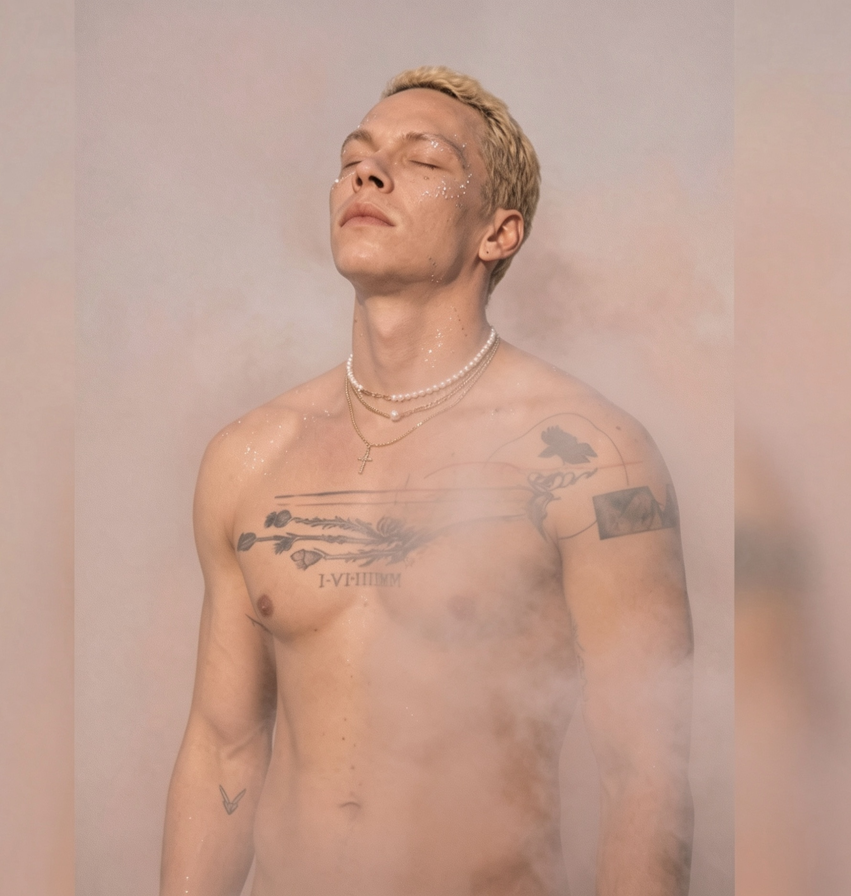
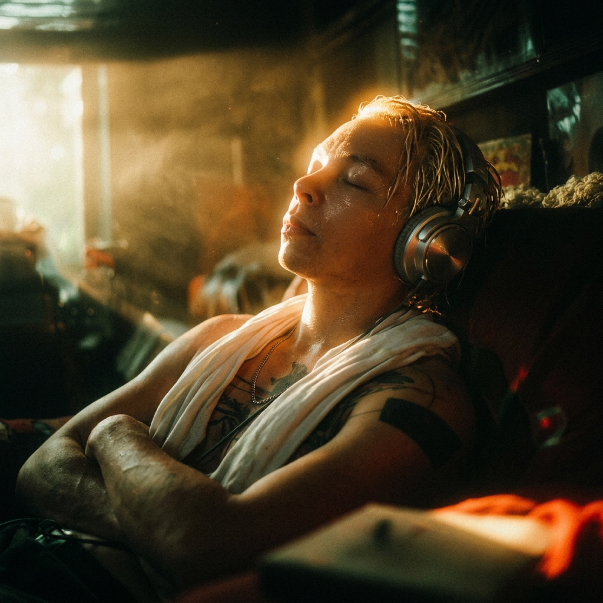
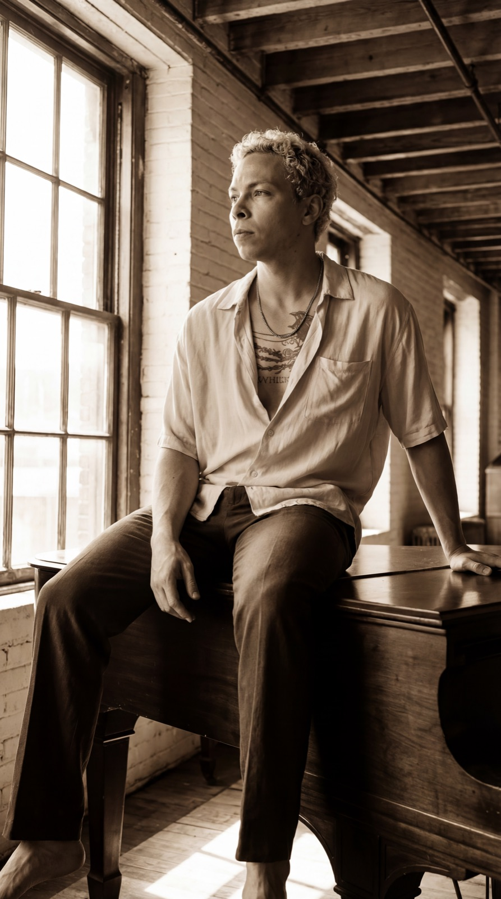
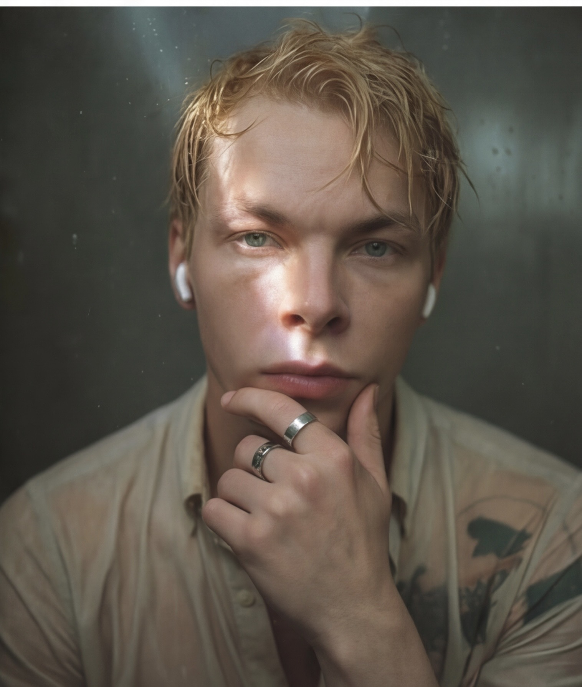

I do not sing to become someone.
I sing because the self is too full to stay quiet.

K∧ELUM · STILL 01Some things are too tender to be said out loud...
so I give them a melody,
and let the air carry the rest.
First, the listening.
The song arrives long before the singing does...
you have to be quiet enough to receive it.

K∧ELUM · STILL 02
K∧ELUM · STILL 03An old piano, an open window...
most of what I know about honesty,
I learned sitting here.
No costume in this one.
A voice, a face, a decision...
to be seen whole, or not at all.

K∧ELUM · STILL 05Look long enough and you will hear it too...
the note underneath the noise.
One take, at the piano where the songs are written. More tapes as they are made.
Small films from the life around the music. They will appear here as they are made.
Reserved.
A moving picture belongs here.
Reserved.
A moving picture belongs here.
Reserved.
A moving picture belongs here.
The songs are one door into the house.
If you want to know what the house believes...
No letters. No schedule. Nothing asked of you.
Leave your email... when the first song is ready, you hear it before anyone.
Silence until then.